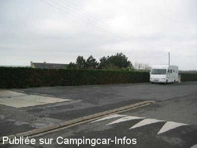
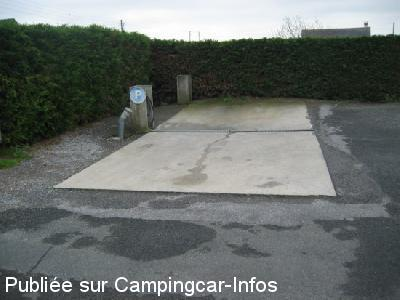

ASN = Aire de services avec stationnement nuit possible de :
CHAMPTOCÉ SUR LOIRE
(N° 604)
Accès/adresse :
Rue de la Hutte
49123 CHAMPTOCÉ SUR LOIRE
49123 CHAMPTOCÉ SUR LOIRE
Latitude : (Nord) 47.41143° Décimaux ou 47° 24′ 41′′
Longitude : (Ouest) -0.86937° Décimaux ou 0° 52′ 9′′
Tarif : Gratuit
Services :


Tous commerces
Autres informations :
Aire ouverte toute l'année
Tel : +33 (0) 241 399 180

Le 26/04/2006 par claude92

Le 26/04/2006 par claude92
de
mamou
le 24/08/2013 :
petit village qui s'est donné la peine d'accueillir les CC et les Campings caristes ne se donnent même pas la peine de respecter le stationnement obligeant d'autres CC à s'en aller car garer en long !! Campings caristes qui ne se donnent pas la peine non plus de vidanger dans l'endroit prévu à cet effet, mais juste à coté coulant dans le caniveau Alors oui les trains passent souvent mais soyons respectueux des lieux !! c'est pas difficile non ! Aire agréable au centre du village qui est très joli, les commerçants sont accueillants
petit village qui s'est donné la peine d'accueillir les CC et les Campings caristes ne se donnent même pas la peine de respecter le stationnement obligeant d'autres CC à s'en aller car garer en long !! Campings caristes qui ne se donnent pas la peine non plus de vidanger dans l'endroit prévu à cet effet, mais juste à coté coulant dans le caniveau Alors oui les trains passent souvent mais soyons respectueux des lieux !! c'est pas difficile non ! Aire agréable au centre du village qui est très joli, les commerçants sont accueillants
de
jdb59
le 03/05/2011 :
De passage aux vacances de Pâques, nous y avons passé 1 nuit. Nous étions le seul camping-car et nous avons été ennuyé jusqu'à 02h30 du matin par des jeunes qui trainaient au stade. Rien de bien méchant mais impossible de dormir.
Les services sont gratuits - pas d'électricité.
De passage aux vacances de Pâques, nous y avons passé 1 nuit. Nous étions le seul camping-car et nous avons été ennuyé jusqu'à 02h30 du matin par des jeunes qui trainaient au stade. Rien de bien méchant mais impossible de dormir.
Les services sont gratuits - pas d'électricité.
de
emmanuel
le 12/11/2010 :
il n'y à plus de branchement électrique , un lampadaire à été mis à la place §
il n'y à plus de branchement électrique , un lampadaire à été mis à la place §
de
trincart
le 30/11/2008 :
Ne pas venir le dimanche dans l'aprés-midi car il y a des matchs de foot-ball et le parking est pris; arriver tard dans la soirée pour avoir de la place.
Ne pas venir le dimanche dans l'aprés-midi car il y a des matchs de foot-ball et le parking est pris; arriver tard dans la soirée pour avoir de la place.
de
claude92
le 26/04/2006 :
Passage Avril 2006. Aire propre et pratique mais passage des trains à 50m.
Passage Avril 2006. Aire propre et pratique mais passage des trains à 50m.